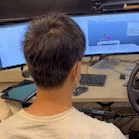
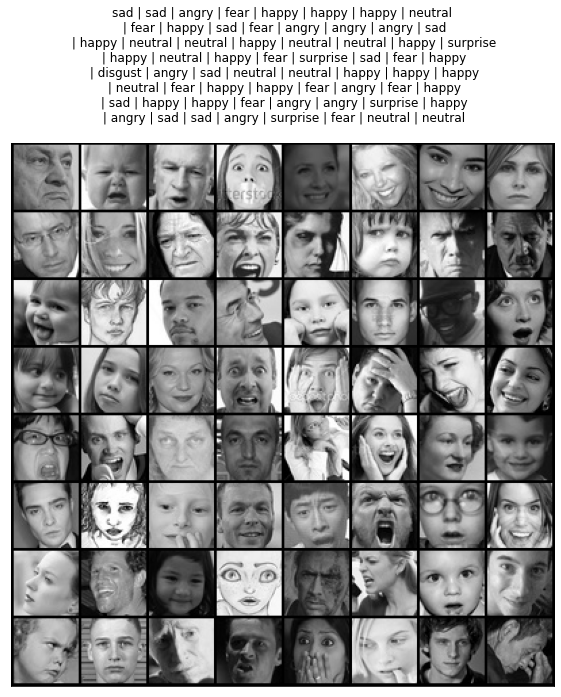
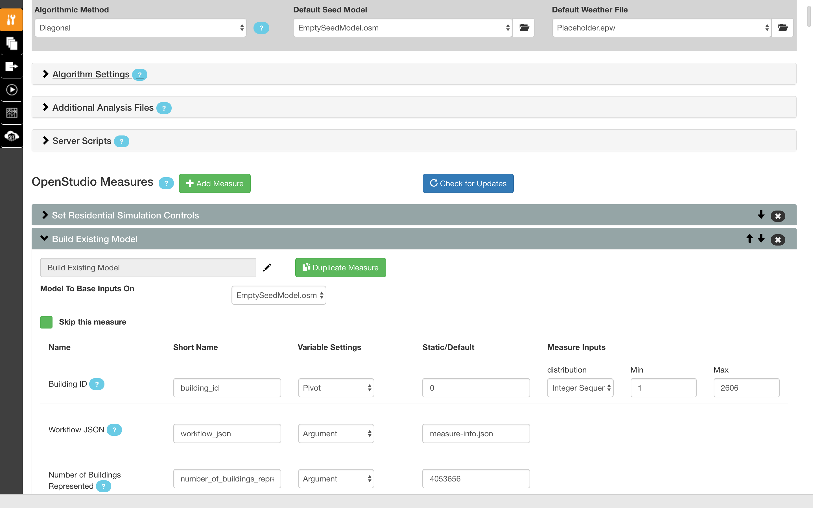
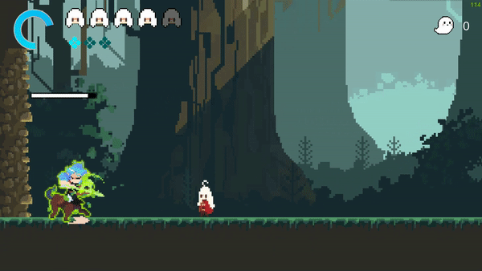
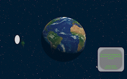
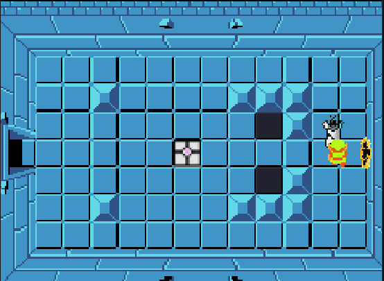

Projects
|

|
A Novel Virtual Robotic Platform for Controlling Assistive Devices
Jul 2022 - Apr 2023
Python, Bash, Linux, Lua, Robotics
To help with the rehabilitation of stroke patients, we developed an assistive device that allows patients to control a
virtual robot arm using inputs from IMUs. The control of the robot arm entails several stages including data calibration,
customization, and various training and testing trials. The multi-threading application employs Principal Component
Analysis (PCA) to process with enhanced precision and efficiency.
|
|
|
Search Engine on MapReduce Server
Feb 2023
Python, Shell, Hadoop
We designed a fault-tolerant manager-worker MapReduce server for distributed computation of an inverted index.
This involved building a MapReduce pipeline and implementing the index server and PageRank search server to
effectively handle search queries. The system we developed ensured efficient distributed computation and seamless
handling of search operations within the MapReduce framework.
|
|
|
Social Media Engine
Jan 2023 - Feb 2023
Python, RESTful, Flask, AWS S3, HTML5, JavaScript, SQLite, Jinja2
I developed a client-side dynamic web application using React for front-end development, Flask for back-end functionality,
and SQLite for database manipulation, supporting various features including user login, posts, and comments.
The application was deployed utilizing AWS S3 for enhanced accessibility and performance.
|
|

|
Comparing Unsupervised Learning Techniques for Emotion Detection
Nov 2022 - Dec 2022
OpenCV, PyTorch, Numpy, Pandas
In our study on emotion detection, we conducted a comprehensive comparison of three unsupervised representation
learning techniques. Specifically, we evaluated the effectiveness of autoencoders, variational autoencoders (VAEs),
and contrastive multiview coding (CMC) on detecting images depicting a range of human emotions.
|
|

|
Development of a Coupled Bottom-Up and Top-Down Modeling Framework to Transform
Long-Term Electricity Demand Forecasting Methods and Results
Aug 2021 - Apr 2022
Numpy, Pandas, R, Ruby, AWS EC2
The frequent occurrence of blackouts during extreme weather conditions highlights the critical need of a robust
electricity demand model. In response, we developed a framework that leverages building models and machine learning
techniques to produce accurate forecasts. I also created multiple scenarios for comparison and conducted simulations on
AWS EC2, which generated accurate hourly national demand predictions.
|
Games
|

|
EECS 494 Project 3 - Signy Adventurry
Feb 2023 - Apr 2023
Unity, #C, Jira
We developed this engaging platformer game where players upgrade their abilities as they navigate through the
mysterious forest, while facing off against a diverse array of enemies. The game features a vast, non-linear map,
challenging boss, smooth camera movements, and engaging abilities and upgrades to enhance their gaming experience.
|
|

|
EECS 494 Project 2
Feb 2023
Unity, #C, Jira
During this intensive two-week project, specifically designed to assess one's ability to design work efficiently
within a tight deadline, I developed this rapidly-prototyped physics-based puzzle game. This game features a
realistic physics system. Players are presented with the challenge to strategically navigate between planets
while carefully managing limited fuels resources.
|
|

|
EECS 494 Project 1 - Legend of Zelda: Portal Fusion
Jan 2023 - Feb 2023
Unity, #C, Jira
This is a recreation of the first dungeon in the original Legend of Zelda released on the Nintendo Entertainment System
in 1986. We implemented a diverse array of enemies, player movements, map, and animations to honor the original game.
We also integrated various innovative features, drawing inspiration from Portal to create a unique gaming experience.
|
|